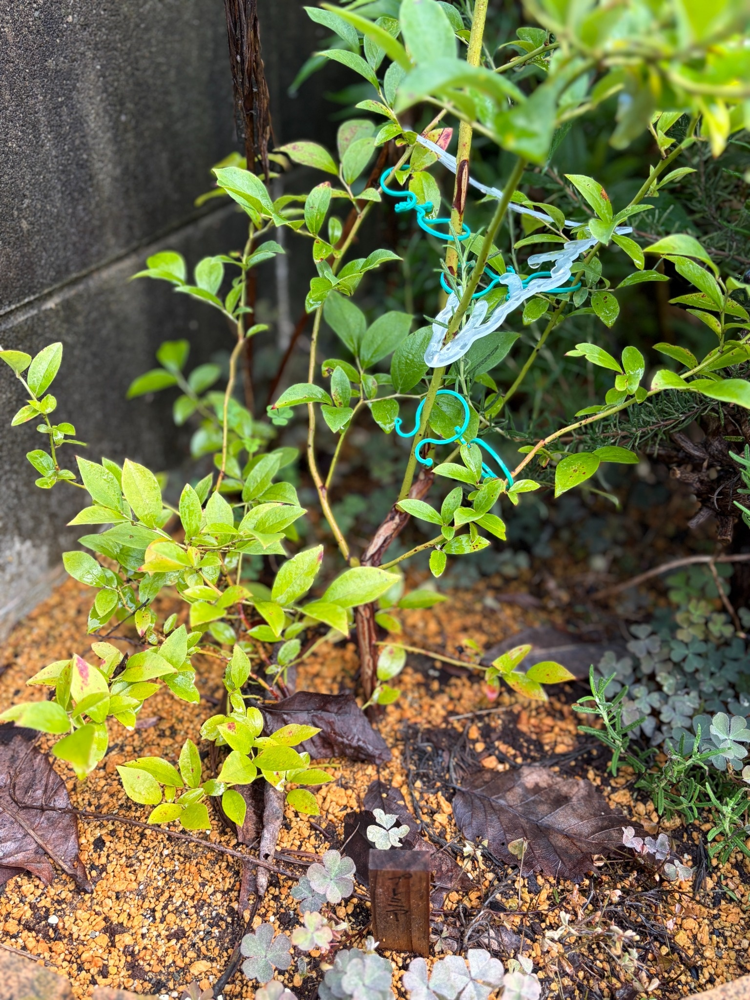

2026/09/05 初めての収穫を楽しんだプレミア。地植えから約8か月半、夏を過ごした枝葉の様子
昨年12月16日に地植えしたブルーベリーのプレミアが、初めての夏を過ごしました。
今年はプレミアだけでなく、一緒に迎えたクライマックスとメンデイトも、3品種ともしっかり実をつけてくれました。収穫したブルーベリーは、ヨーグルトに混ぜておいしくいただきました。
苗を購入したときに楽しみにしていた、自分の庭で育てたブルーベリーを食べること。それを実際に楽しめたのが、何よりうれしいです。
残念ながら、実がついているところや収穫した実の写真は撮れていません。今回は、9月5日のプレミアの枝葉を残しておきます。収穫の喜びとともに、その後の株がどんな姿をしているのかも、生育記録としてつないでいきたいと思います。
冬の地植えから、約8か月半がたちました
プレミアを購入したのは、2025年12月13日です。クライマックス、メンデイトとともに迎え、その3日後の12月16日に植え付けました。
プレミアとクライマックスは地植えにし、メンデイトはポット植えにしました。プレミアの株元には木製の名札を立て、庭での生育が始まりました。
植え付け当日は、葉の少ない部分で細い枝がよく見えていました。緑色の葉だけでなく、黄色や橙色、赤みを帯びた葉も残り、その姿を出発点として記録しました。
そこから季節が進み、今回の写真では緑色や黄緑色の葉が枝の各所についています。冬の植え付け時とは、葉の色や枝を包む緑の印象が変わりました。
写真の向きや写っている範囲が違うので、伸びた長さや増えた枝数を正確に比べることはできません。それでも、庭に植えた冬の姿から、夏を過ごした9月の姿まで記録がつながりました。
3品種とも実をつけてくれました
今年のブルーベリーでうれしかったのは、プレミア、クライマックス、メンデイトの3品種すべてで収穫を楽しめたことです。
購入したときには、実付きのことも考えて、ラビットアイ系の異なる品種をそろえました。ラベルの果実写真を眺めながら、いつか庭でも実がなればと思っていましたが、その楽しみを実際に味わうことができました。
地植えのプレミアとクライマックス、ポット植えのメンデイト。それぞれの場所で育てた株が実をつけてくれたことに、まずは喜びを感じます。
ただ、実がついたという結果だけで、どの株の花粉がどの品種の受粉に役立ったのかまでは分かりません。3品種をそろえて育てた結果を喜びながら、これからも花の時期や実付きの様子を見ていきたいと思います。
今回は、品種ごとの収穫量や果実の大きさを詳しく比べた記録は残せません。それでも、育て始めた株から実を採り、食べられたことは、わが家のブルーベリーの大切な一歩になりました。
収穫した実は、ヨーグルトに混ぜて楽しみました
収穫したブルーベリーは、ヨーグルトに混ぜていただきました。
いつものヨーグルトでも、自分の庭で育てた実が入ると、少し特別に感じます。苗を購入し、庭に植えたところから始まった楽しみが、食卓までつながりました。
おいしく食べられたことが、何よりうれしいです。果実の大きさや味を細かく比べることとは別に、自分で育てたものを収穫していただく満足感がありました。
実の写真を撮れなかったのは心残りですが、食べたときの楽しさも含めて、最初の収穫の記録として残しておきます。次に収穫できたときには、枝についている実や、採れた実の姿も写真に残せたらと思います。
9月のプレミアには、緑や黄緑の葉が広がっています
今回の写真では、緑色や黄緑色の葉が目に入ります。枝先に小さな葉がまとまっているところもあれば、比較的大きな葉が広がっているところもあります。
左下の枝には葉が重なり、中央から右側へ伸びる枝にも、間隔を置きながら葉がついています。葉が集まっている部分と、枝の線が見える部分が混在しています。
緑色にも違いがあります。少し濃く見える葉、明るい黄緑色の葉、黄色みを帯びた葉があり、株全体が同じ濃さの緑にそろっているわけではありません。
日の当たる手前の葉と、奥の陰になった葉では、色の見え方も変わります。写真の明るさだけで葉色を判断せず、一枚ずつの色と、枝全体の様子を合わせて眺めたいと思います。
冬には枝の骨組みに目が向きましたが、今回は枝に沿って広がる葉が、株の印象をつくっています。季節が変わると、同じプレミアでも眺めるところが変わってきます。
下の方には、黄色みのある葉や赤みも見られます
緑の葉が目立つ一方で、株の下の方には黄色みの強い葉もあります。
一枚の葉の中に緑色と黄色が混じるものや、葉先や縁の一部に赤みがあるものも見られます。黄緑色の面に赤褐色の部分が重なり、まだらに見える葉もあります。
上の方や奥にも赤みのある葉が見えますが、株全体が赤く色づいているわけではありません。今のプレミアは、緑や黄緑を中心にしながら、黄色や赤みが部分的に混じる姿です。
購入時や地植えした日の写真にも、黄色や赤みのある葉は残っていました。ただ、12月と9月では季節も違い、今ある葉を冬の葉と同じ状態として見ることはできません。
9月上旬の葉色を、そのまま秋の紅葉と決めつけずに残しておきたいと思います。これから黄色みや赤みがどのように変わるのか、緑の葉がどれくらい残るのかも気になります。

葉の斑点や、葉先の変色もあります
葉を近くで見ると、一部に赤褐色や暗い色の小さな斑点があります。葉先や縁の色が変わっているものもあり、どの葉も傷みのない状態というわけではありません。
右側の葉には細かな点がまとまって見えるところがあり、左下にも赤褐色の部分がある葉が見られます。遠くからは緑に見える株でも、近くで眺めると葉の状態には違いがあります。
収穫できたことはうれしいですが、その結果だけで、今の枝葉もすべて順調だと考えることはできません。実を楽しんだ後の株にも、気になるところは残っています。
一方で、葉の色や斑点だけから、暑さ、乾燥、土の状態、病気などのどれか一つを原因として決めることもできません。今見えている状態を残し、その後の変化と合わせて見ていきたいです。
昨年12月の葉にも斑点や傷みはありましたが、長い期間が空いています。今回の斑点を、購入時から同じものが続いていると考えず、9月5日の葉の状態として記録します。
上へ伸びる枝と、左右へ広がる枝
枝を見ると、中央付近に上へ向かって伸びる緑色の枝があります。その周囲から細い枝が左右へ広がり、それぞれに葉がついています。
中央から右へ斜めに伸びる枝もあれば、左側や低い位置で横へ広がる枝もあります。上方向だけでなく、株の周囲にも枝葉が広がった姿です。
枝の色には違いがあり、緑色の部分と褐色の部分が見られます。株元に近いところでは褐色の枝が目立ち、その上や周囲に緑色の枝が重なっています。
地植えしたときにも、中央の枝と左右へ分かれる細い枝がありました。今回も上へ伸びる部分と横へ広がる部分の両方がありますが、葉があることで、冬とは輪郭の見え方が違います。
写真の上端より先へ続いている枝もあるため、今回の一枚だけでは株の高さ全体は分かりません。大きくなった長さを数字にすることよりも、今の枝葉のつながりを残しておきたいと思います。
枝先の葉にも、大きさの違いがあります
枝先には、小さな葉が近くに集まっているところがあります。その少し下には大きめの葉があり、同じ枝の中でも葉の大きさや間隔が違います。
小さな葉がまとまっている部分は、近くで見ると枝先の形が分かりやすいところです。葉が向いている方向も一様ではなく、上を向くもの、横へ開くものが重なっています。
ただ、小さく明るい色の葉だからといって、いつ出てきた葉なのかまでは分かりません。今回新しく出た葉と決めつけず、今、枝先にこうした葉があることを残しておきます。
これから同じ枝先が伸びていくのか、今ある葉がどんな色に変わるのか。枝全体の形とともに、先端の小さな違いも見ていきたいです。
株元の名札が、植え付けた場所を教えてくれます
写真の手前には、地植えしたときに立てた「プレミア」の木製名札が見えています。
昨年12月は、黄土色の粒状の用土と、そこから立ち上がる枝、名札のある姿を残しました。今回も同じ株元に名札があり、冬から続く記録の目印になっています。
足元には黄土色の粒が残る部分と、色の濃い土が見える部分があります。その上には大きな枯れ葉もあり、小さな植物が周囲に広がっています。
地面の大きな枯れ葉は、プレミアの葉とは形が違います。足元に落ちている葉を、すべてプレミアから落ちたものとして数えることはできません。
株の右側や名札の周りには、プレミアとは別の小さな植物も見えます。葉の形を見分けながら、周囲の緑とプレミア自身の枝葉を区別して眺めたいと思います。
初めての収穫と、その後の姿をつないでいきます
黒い育苗ポットに入った苗を迎えた12月13日。そして庭へ地植えした12月16日。そのとき楽しみにしていた収穫を、今年は実際に味わうことができました。
プレミア、クライマックス、メンデイトの3品種とも実をつけ、ヨーグルトに混ぜておいしくいただけたことは、育て始めてからの大きな喜びです。
今のプレミアには緑色や黄緑色の葉があり、下の方には黄色みのある葉や赤褐色の部分も見られます。細かな斑点や葉先の変色も含めて、初めての夏を過ごした株の姿です。
果実を楽しんだ後も、枝葉の変化は続いていきます。実が採れたことだけで一年を終えるのではなく、その後にどんな葉を残し、枝がどう広がっているのかも見守っていきたいと思います。
2026年9月5日。初めての収穫を楽しんだプレミアを、地植えから約8か月半の姿として記録します。